| Matrix name | Aligned logos | cor |
Ncor |
logoDP |
NIcor |
NsEucl |
SSD |
NSW |
rcor |
rNcor |
rlogoDP |
rNIcor |
rNsEucl |
rSSD |
rNSW |
rank_mean |
match_rank |
Aligned matrices |
|---|
| oligos_7nt_mkv5_m2_shift4 (oligos_7nt_mkv5_m2) |
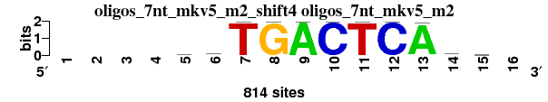 |
|
|
|
|
|
|
|
|
|
|
|
|
|
|
|
|
; oligos_7nt_mkv5_m2; m=0 (reference); ncol1=11; shift=4; ncol=16; ----rrTGACTCAbm-
; Alignment reference
a 0 0 0 0 236 279 0 2 812 0 0 2 805 92 215 0
c 0 0 0 0 164 183 4 1 0 812 0 812 1 220 217 0
g 0 0 0 0 229 255 0 811 2 2 2 0 8 245 181 0
t 0 0 0 0 185 97 810 0 0 0 812 0 0 257 201 0
|
| MA0478.1_shift3 (FOSL2) |
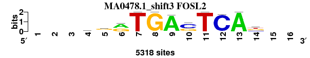 |
0.954 |
0.795 |
11.120 |
0.795 |
0.951 |
0.478 |
0.976 |
2 |
4 |
4 |
4 |
1 |
3 |
1 |
2.714 |
1 |
; oligos_7nt_mkv5_m2 versus MA0478.1 (FOSL2); m=1/15; ncol2=11; w=10; offset=-1; strand=D; shift=3; score= 2.7143; ---krrTGAsTCAb--
; cor=0.954; Ncor=0.795; logoDP=11.120; NIcor=0.795; NsEucl=0.951; SSD=0.478; NSW=0.976; rcor=2; rNcor=4; rlogoDP=4; rNIcor=4; rNsEucl=1; rSSD=3; rNSW=1; rank_mean=2.714; match_rank=1
a 0 0 0 833 1525 2861 0 0 5075 0 0 205 5318 0 0 0
c 0 0 0 994 592 55 0 0 51 3286 0 5113 0 1399 0 0
g 0 0 0 2086 2707 2328 0 5318 192 1838 0 0 0 1933 0 0
t 0 0 0 1405 494 74 5318 0 0 194 5318 0 0 1986 0 0
|
| MA0477.1_shift4 (FOSL1) |
|
0.943 |
0.943 |
11.500 |
0.945 |
0.951 |
0.593 |
0.973 |
5 |
1 |
1 |
1 |
2 |
6 |
3 |
2.714 |
2 |
; oligos_7nt_mkv5_m2 versus MA0477.1 (FOSL1); m=2/15; ncol2=11; w=11; offset=0; strand=D; shift=4; score= 2.7143; ----rrTGAsTCAks-
; cor=0.943; Ncor=0.943; logoDP=11.500; NIcor=0.945; NsEucl=0.951; SSD=0.593; NSW=0.973; rcor=5; rNcor=1; rlogoDP=1; rNIcor=1; rNsEucl=2; rSSD=6; rNSW=3; rank_mean=2.714; match_rank=2
a 0 0 0 0 1791 1568 0 0 5272 124 0 177 5272 37 1184 0
c 0 0 0 0 119 437 0 0 0 3120 0 5095 0 811 1684 0
g 0 0 0 0 2384 3109 0 5272 0 2028 0 0 0 1734 1875 0
t 0 0 0 0 978 158 5272 0 0 0 5272 0 0 2690 529 0
|
| MA0490.1_shift3 (JUNB) |
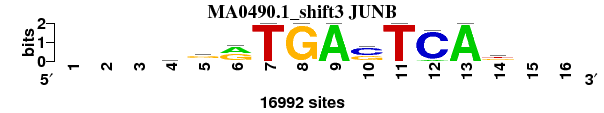 |
0.949 |
0.791 |
11.221 |
0.790 |
0.949 |
0.522 |
0.974 |
3 |
5 |
3 |
5 |
3 |
4 |
2 |
3.571 |
3 |
; oligos_7nt_mkv5_m2 versus MA0490.1 (JUNB); m=3/15; ncol2=11; w=10; offset=-1; strand=D; shift=3; score= 3.5714; ---grrTGAsTCAk--
; cor=0.949; Ncor=0.791; logoDP=11.221; NIcor=0.790; NsEucl=0.949; SSD=0.522; NSW=0.974; rcor=3; rNcor=5; rlogoDP=3; rNIcor=5; rNsEucl=3; rSSD=4; rNSW=2; rank_mean=3.571; match_rank=3
a 0 0 0 3605 5055 8384 0 0 16992 0 0 1256 16992 736 0 0
c 0 0 0 3366 1057 582 0 0 0 9859 0 15736 0 2962 0 0
g 0 0 0 5983 8427 8026 0 16992 0 6281 0 0 0 6117 0 0
t 0 0 0 4038 2453 0 16992 0 0 852 16992 0 0 7177 0 0
|
| MA0491.1_shift4 (JUND) |
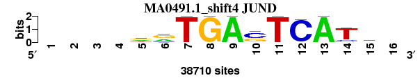 |
0.926 |
0.926 |
11.425 |
0.920 |
0.943 |
0.783 |
0.964 |
6 |
2 |
2 |
2 |
5 |
7 |
6 |
4.286 |
4 |
; oligos_7nt_mkv5_m2 versus MA0491.1 (JUND); m=4/15; ncol2=11; w=11; offset=0; strand=D; shift=4; score= 4.2857; ----drTGAsTCATs-
; cor=0.926; Ncor=0.926; logoDP=11.425; NIcor=0.920; NsEucl=0.943; SSD=0.783; NSW=0.964; rcor=6; rNcor=2; rlogoDP=2; rNIcor=2; rNsEucl=5; rSSD=7; rNSW=6; rank_mean=4.286; match_rank=4
a 0 0 0 0 12389 15163 0 0 38710 0 0 1547 38710 0 5786 0
c 0 0 0 0 759 4824 0 0 0 22857 0 37163 0 5136 14956 0
g 0 0 0 0 13640 18723 0 38710 0 14078 0 0 0 2301 12429 0
t 0 0 0 0 11922 0 38710 0 0 1775 38710 0 0 31273 5539 0
|
| MA0489.1_shift0 (JUN_(var.2)) |
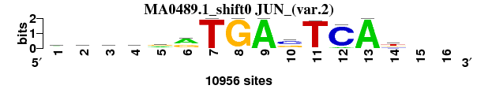 |
0.947 |
0.631 |
10.826 |
0.626 |
0.948 |
0.547 |
0.973 |
4 |
8 |
6 |
6 |
4 |
5 |
4 |
5.286 |
5 |
; oligos_7nt_mkv5_m2 versus MA0489.1 (JUN_(var.2)); m=5/15; ncol2=14; w=10; offset=-4; strand=D; shift=0; score= 5.2857; rrrrrrTGAsTCAt--
; cor=0.947; Ncor=0.631; logoDP=10.826; NIcor=0.626; NsEucl=0.948; SSD=0.547; NSW=0.973; rcor=4; rNcor=8; rlogoDP=6; rNIcor=6; rNsEucl=4; rSSD=5; rNSW=4; rank_mean=5.286; match_rank=5
a 4852 3927 3726 4396 4146 5930 0 0 10953 382 199 956 10956 376 0 0
c 1250 1324 1127 1122 593 993 0 0 0 5704 0 10000 0 2509 0 0
g 2818 4110 4330 3461 4213 4033 0 10956 0 4090 0 0 0 2645 0 0
t 2036 1595 1773 1977 2004 0 10956 0 3 780 10757 0 0 5426 0 0
|
| MA0476.1_shift4 (FOS) |
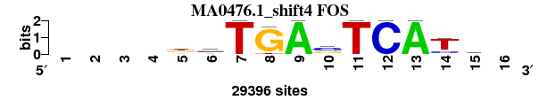 |
0.921 |
0.921 |
10.973 |
0.913 |
0.942 |
0.809 |
0.963 |
8 |
3 |
5 |
3 |
6 |
8 |
7 |
5.714 |
6 |
; oligos_7nt_mkv5_m2 versus MA0476.1 (FOS); m=6/15; ncol2=11; w=11; offset=0; strand=D; shift=4; score= 5.7143; ----dvTGAsTCATb-
; cor=0.921; Ncor=0.921; logoDP=10.973; NIcor=0.913; NsEucl=0.942; SSD=0.809; NSW=0.963; rcor=8; rNcor=3; rlogoDP=5; rNIcor=3; rNsEucl=6; rSSD=8; rNSW=7; rank_mean=5.714; match_rank=6
a 0 0 0 0 7879 7475 0 0 29396 998 0 0 29396 258 4006 0
c 0 0 0 0 712 10177 0 0 0 14079 0 29396 0 5823 8236 0
g 0 0 0 0 9686 10841 0 27108 0 11206 0 0 0 1538 7897 0
t 0 0 0 0 11119 903 29396 2288 0 3113 29396 0 0 21777 9257 0
|
| MA0099.2_shift6 (JUN::FOS) |
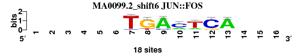 |
0.974 |
0.620 |
7.313 |
0.622 |
0.934 |
0.422 |
0.970 |
1 |
11 |
12 |
7 |
7 |
1 |
5 |
6.286 |
7 |
; oligos_7nt_mkv5_m2 versus MA0099.2 (JUN::FOS); m=7/15; ncol2=7; w=7; offset=2; strand=D; shift=6; score= 6.2857; ------TGAmTCA---
; cor=0.974; Ncor=0.620; logoDP=7.313; NIcor=0.622; NsEucl=0.934; SSD=0.422; NSW=0.970; rcor=1; rNcor=11; rlogoDP=12; rNIcor=7; rNsEucl=7; rSSD=1; rNSW=5; rank_mean=6.286; match_rank=7
a 0 0 0 0 0 0 0 0 16 5 3 0 16 0 0 0
c 0 0 0 0 0 0 1 0 2 12 0 15 0 0 0 0
g 0 0 0 0 0 0 0 15 0 1 1 3 1 0 0 0
t 0 0 0 0 0 0 17 3 0 0 14 0 1 0 0 0
|
| MA0462.1_shift2 (BATF::JUN) |
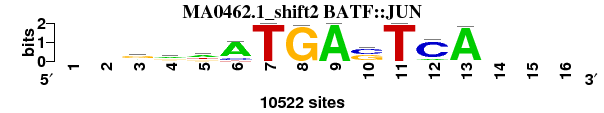 |
0.909 |
0.630 |
10.268 |
0.620 |
0.925 |
0.916 |
0.949 |
10 |
10 |
8 |
8 |
8 |
10 |
10 |
9.143 |
8 |
; oligos_7nt_mkv5_m2 versus MA0462.1 (BATF::JUN); m=8/15; ncol2=11; w=9; offset=-2; strand=D; shift=2; score= 9.1429; --rrwATGAsTCA---
; cor=0.909; Ncor=0.630; logoDP=10.268; NIcor=0.620; NsEucl=0.925; SSD=0.916; NSW=0.949; rcor=10; rNcor=10; rlogoDP=8; rNIcor=8; rNsEucl=8; rSSD=10; rNSW=10; rank_mean=9.143; match_rank=8
a 0 0 3082 4782 4519 8258 0 0 10522 586 0 1291 10264 0 0 0
c 0 0 481 553 170 1478 0 0 0 5026 0 8590 0 0 0 0
g 0 0 5136 2889 2219 0 0 10374 0 4910 0 641 0 0 0 0
t 0 0 1823 2298 3614 786 10522 148 0 0 10522 0 258 0 0 0
|
| MA0089.1_shift4 (NFE2L1::MafG) |
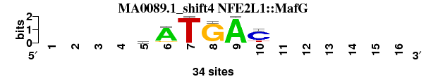 |
0.922 |
0.503 |
5.953 |
0.490 |
0.919 |
0.471 |
0.961 |
7 |
14 |
13 |
13 |
10 |
2 |
8 |
9.571 |
9 |
; oligos_7nt_mkv5_m2 versus MA0089.1 (NFE2L1::MafG); m=9/15; ncol2=6; w=6; offset=0; strand=D; shift=4; score= 9.5714; ----sATGAC------
; cor=0.922; Ncor=0.503; logoDP=5.953; NIcor=0.490; NsEucl=0.919; SSD=0.471; NSW=0.961; rcor=7; rNcor=14; rlogoDP=13; rNIcor=13; rNsEucl=10; rSSD=2; rNSW=8; rank_mean=9.571; match_rank=9
a 0 0 0 0 7 29 0 1 34 0 0 0 0 0 0 0
c 0 0 0 0 11 2 0 0 0 26 0 0 0 0 0 0
g 0 0 0 0 10 3 0 32 0 2 0 0 0 0 0 0
t 0 0 0 0 6 0 34 1 0 6 0 0 0 0 0 0
|
| MA0099.1_rc_shift6 (JUN::FOS_rc) |
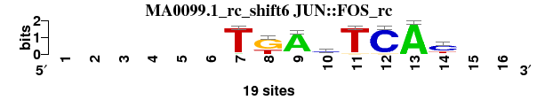 |
0.920 |
0.669 |
0.532 |
-0.216 |
0.920 |
0.813 |
0.949 |
9 |
6 |
14 |
15 |
9 |
9 |
9 |
10.143 |
10 |
; oligos_7nt_mkv5_m2 versus MA0099.1_rc (JUN::FOS_rc); m=10/15; ncol2=8; w=8; offset=2; strand=R; shift=6; score=10.1429; ------TKAsTCAy--
; cor=0.920; Ncor=0.669; logoDP=0.532; NIcor=-0.216; NsEucl=0.920; SSD=0.813; NSW=0.949; rcor=9; rNcor=6; rlogoDP=14; rNIcor=15; rNsEucl=9; rSSD=9; rNSW=9; rank_mean=10.143; match_rank=10
a 0 0 0 0 0 0 1 0 17 3 0 0 19 0 0 0
c 0 0 0 0 0 0 0 0 0 9 0 18 0 12 0 0
g 0 0 0 0 0 0 0 13 1 6 1 1 0 2 0 0
t 0 0 0 0 0 0 18 6 1 1 18 0 0 5 0 0
|
| MA0591.1_shift2 (Bach1::Mafk) |
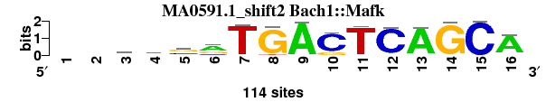 |
0.859 |
0.630 |
10.367 |
0.606 |
0.917 |
1.656 |
0.925 |
12 |
9 |
7 |
9 |
11 |
13 |
11 |
10.286 |
11 |
; oligos_7nt_mkv5_m2 versus MA0591.1 (Bach1::Mafk); m=11/15; ncol2=15; w=11; offset=-2; strand=D; shift=2; score=10.2857; --rssrTGACTCAGCA
; cor=0.859; Ncor=0.630; logoDP=10.367; NIcor=0.606; NsEucl=0.917; SSD=1.656; NSW=0.925; rcor=12; rNcor=9; rlogoDP=7; rNIcor=9; rNsEucl=11; rSSD=13; rNSW=11; rank_mean=10.286; match_rank=11
a 0 0 45 14 15 66 2 0 113 0 1 5 108 0 0 98
c 0 0 14 36 41 16 1 0 0 94 0 107 1 1 114 4
g 0 0 41 46 54 32 0 107 0 20 4 2 3 113 0 6
t 0 0 14 18 4 0 111 7 1 0 109 0 2 0 0 6
|
| MA0501.1_shift5 (NFE2::MAF) |
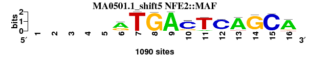 |
0.863 |
0.539 |
9.764 |
0.513 |
0.912 |
1.545 |
0.923 |
11 |
13 |
9 |
12 |
13 |
12 |
12 |
11.714 |
12 |
; oligos_7nt_mkv5_m2 versus MA0501.1 (NFE2::MAF); m=12/15; ncol2=15; w=10; offset=1; strand=D; shift=5; score=11.7143; -----rTGACTCAGCA
; cor=0.863; Ncor=0.539; logoDP=9.764; NIcor=0.513; NsEucl=0.912; SSD=1.545; NSW=0.923; rcor=11; rNcor=13; rlogoDP=9; rNIcor=12; rNsEucl=13; rSSD=12; rNSW=12; rank_mean=11.714; match_rank=12
a 0 0 0 0 0 726 0 0 1090 16 110 80 978 8 0 931
c 0 0 0 0 0 26 0 0 0 871 1 937 0 4 1063 17
g 0 0 0 0 0 334 0 1082 0 166 12 22 51 1041 22 73
t 0 0 0 0 0 4 1090 8 0 37 967 51 61 37 5 69
|
| MA0150.2_shift1 (Nfe2l2) |
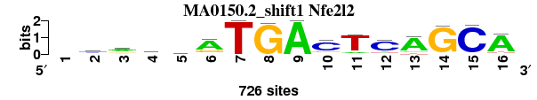 |
0.839 |
0.615 |
8.330 |
0.579 |
0.916 |
1.716 |
0.922 |
13 |
12 |
10 |
11 |
12 |
14 |
13 |
12.143 |
13 |
; oligos_7nt_mkv5_m2 versus MA0150.2 (Nfe2l2); m=13/15; ncol2=15; w=11; offset=-3; strand=D; shift=1; score=12.1429; -casmrTGACTCAGCA
; cor=0.839; Ncor=0.615; logoDP=8.330; NIcor=0.579; NsEucl=0.916; SSD=1.716; NSW=0.922; rcor=13; rNcor=12; rlogoDP=10; rNIcor=11; rNsEucl=12; rSSD=14; rNSW=13; rank_mean=12.143; match_rank=13
a 0 166 401 118 203 488 0 0 726 20 84 65 577 10 4 623
c 0 338 78 239 247 28 0 0 0 533 20 549 3 11 699 26
g 0 109 159 275 152 205 0 711 0 118 16 46 90 698 19 31
t 0 113 88 94 124 5 726 15 0 55 606 66 56 7 4 46
|
| MA0150.1_shift5 (NFE2L2) |
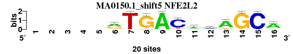 |
0.783 |
0.653 |
7.508 |
0.588 |
0.894 |
2.227 |
0.889 |
15 |
7 |
11 |
10 |
14 |
15 |
15 |
12.429 |
14 |
; oligos_7nt_mkv5_m2 versus MA0150.1 (NFE2L2); m=14/15; ncol2=11; w=10; offset=1; strand=D; shift=5; score=12.4286; -----rTGACwmAGCA
; cor=0.783; Ncor=0.653; logoDP=7.508; NIcor=0.588; NsEucl=0.894; SSD=2.227; NSW=0.889; rcor=15; rNcor=7; rlogoDP=11; rNIcor=10; rNsEucl=14; rSSD=15; rNSW=15; rank_mean=12.429; match_rank=14
a 0 0 0 0 0 10 0 0 20 0 6 5 16 0 0 15
c 0 0 0 0 0 1 0 0 0 17 2 10 0 0 20 2
g 0 0 0 0 0 9 0 19 0 1 1 1 2 20 0 2
t 0 0 0 0 0 0 20 1 0 2 11 4 2 0 0 1
|
| MA0067.1_rc_shift3 (Pax2_rc) |
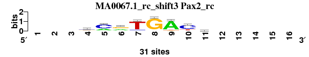 |
0.821 |
0.479 |
0.313 |
-0.162 |
0.888 |
1.233 |
0.912 |
14 |
15 |
15 |
14 |
15 |
11 |
14 |
14.000 |
15 |
; oligos_7nt_mkv5_m2 versus MA0067.1_rc (Pax2_rc); m=15/15; ncol2=8; w=7; offset=-1; strand=R; shift=3; score= 14; ---vmrTGAcw-----
; cor=0.821; Ncor=0.479; logoDP=0.313; NIcor=-0.162; NsEucl=0.888; SSD=1.233; NSW=0.912; rcor=14; rNcor=15; rlogoDP=15; rNIcor=14; rNsEucl=15; rSSD=11; rNSW=14; rank_mean=14.000; match_rank=15
a 0 0 0 8 10 11 1 2 26 2 9 0 0 0 0 0
c 0 0 0 11 19 1 3 1 0 21 5 0 0 0 0 0
g 0 0 0 11 0 17 1 28 2 1 7 0 0 0 0 0
t 0 0 0 1 2 2 26 0 3 7 10 0 0 0 0 0
|
{kind=link}
{kind=link}
{kind=link}
{kind=link}
{kind=link}
{kind=link}
{kind=link}
{kind=link}
{kind=link}
{kind=link}
{kind=link}
{kind=link}
{kind=link}
{kind=link}
{kind=link}
{kind=link}